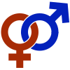

gender

Definition: Gender includes the social, psychological, cultural and behavioral aspects of being a man, woman, or other gender identity. Depending on the context, this may include sex-based social structures (i.e. gender roles) and gender expression. Most cultures use a gender binary, in which gender is divided into two categories, and people are considered part of one or the other (boys/men and girls/women); those who are outside these groups may fall under the umbrella term non-binary. Some societies have specific genders besides "man" and "woman", such as the hijras of South Asia; these are often referred to as third genders (and fourth genders, etc.). Most scholars agree that gender is a central characteristic for social organization.
Source: Wikipedia
Wikipedia Page (Something wrong with this association? Let us know.)
Wikidata Page (Something wrong with this association? Let us know.)